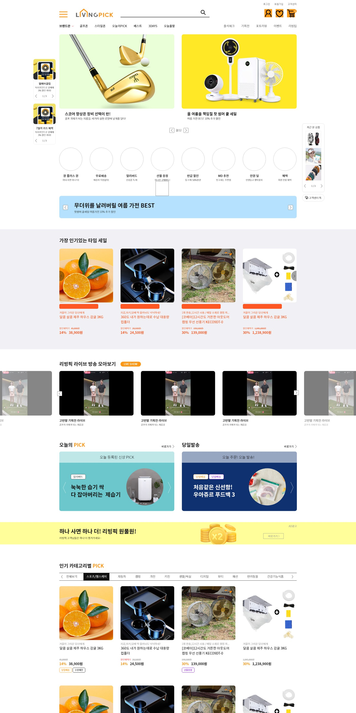
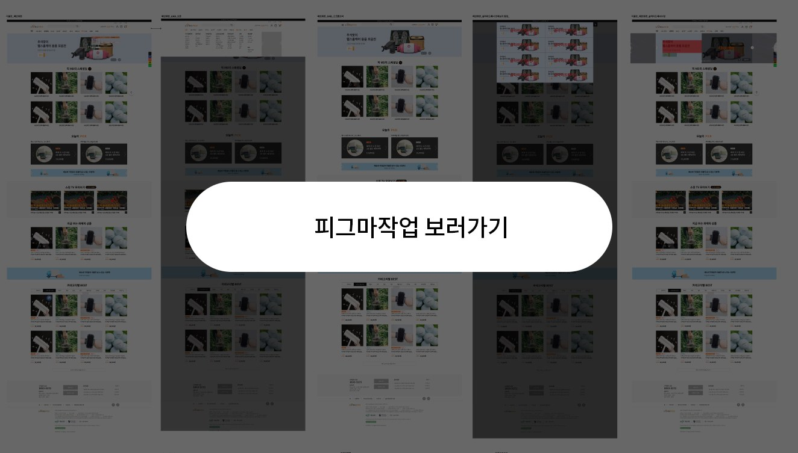

← 경력으로 돌아가기
리빙픽_메인ver1(PC)
리빙픽_메인ver2(PC)
← 경력으로 돌아가기
리빙픽_메인
- 디자인 참여도
- ui디자인 100% 기획 80%
- 작업프로그램
- 포토샵 / XD /피그마
- 개발 목적
- 메인 서비스 개선
- 플랫폼
- 메이크샵을 이용한 버티컬 커머스
- 디자인
- 미디어 커머스의 특성을 살려 메인에 노출되는 서비스를 개선함. 메인 이외에 ui 개선 및 디자인 고도화 상시 진행중
작업 순서대로 ui 개선된 디자인 화면
해당 이미지 클릭 시 확대 이미지 확인 가능합니다.


클릭하면 전체 이미지 원본 파일 보기

피그마 작업 보기